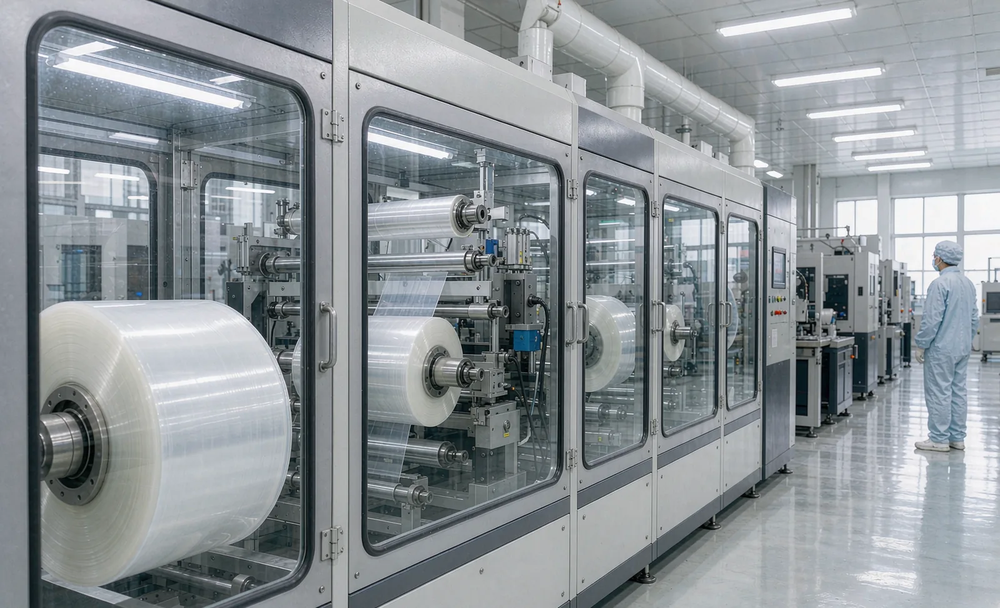
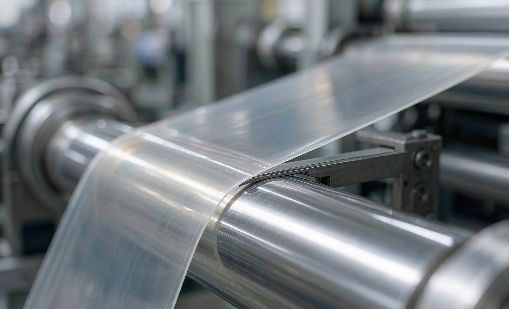

Published September 14, 2026 | By HDPTH Technical Editorial Team

Battery separator film is among the least forgiving webs in roll converting. A wet-process PE or dry-process PP separator may be 5–20 µm thick, it stretches at low stress, it carries an electrostatic charge that attracts every particle in the room, and its cut edge becomes an electrode interface in the finished cell. A machine that slits packaging film acceptably can ruin separator economics — through scrap, edge defects found at cell assembly, or latent short-circuit risk that survives to the field. The specification below organizes the requirements a buyer should put in the RFQ; the theme throughout: state the number, state the measurement, and test on your material.
Define the material envelope first
Before comparing machines, fix the material window the machine must serve:
- Base film: PE (wet process) or PP (dry process), thickness range including the thinnest grade you plan to run.
- Coatings: uncoated, ceramic-coated on one side, or polymer-laminated; coated-face orientation matters everywhere downstream.
- Parent roll: width, maximum diameter, core size, and the roll-hardness and ovality limits you accept from your film supplier.
- Finished widths: the narrowest slit width and the lane count at that width — this drives knife spacing, shaft deflection and rewind design.
- Finished rolls: width, diameter, mass, core type and the downstream unwind orientation (which face must face out).
Low-tension control: the defining requirement
Tension is the first place standard machines fail on separator. The web must be held flat and tracked true, but the absolute tension window is tiny — often a few tenths of a newton per centimetre of width for the thinnest grades, and the allowable window narrows further at the unwind as the roll diameter changes.
Specify the tension system zone by zone:
| Zone | What to specify | Why it matters |
|---|---|---|
| Unwind | Closed-loop tension control with load-cell feedback, diameter-compensated setpoint, low-inertia core chucks | Tension must hold constant from full parent roll to empty core without stretching the web |
| Process span | Minimum roller count, small-diameter balanced rollers, low-friction bearings, optional driven nip or vacuum roller | Every roller adds drag and inertia the delicate web must absorb |
| Slitting point | Stable web support at the cut — backed cutting on a smooth support roller, precise knife pressure | Tension spikes at the cut create burrs, slivers and length variation |
| Rewind | Independent per-shaft or per-lane tension control, center-surface or surface rewind assist, taper-tension recipe | First wraps define roll quality; taper prevents inner-wrap crush on soft PE film |
Also specify the dynamic behavior: maximum acceleration and deceleration ramps in m/s², tension excursion limits during speed changes, and automatic tension re-trim after a splice or diameter step. Require the supplier to state the lowest stable running tension they will guarantee for your thickness — and prove it at FAT with tension logging at production speed.
Cleanliness, static and dust
Separator production happens in controlled environments; many plants operate production and converting areas to cleanliness classes defined in ISO 14644-1, with the critical web path the most tightly controlled zone of all. The machine must be designed to belong in that environment:
- Enclosure: a hood or full enclosure over the web path with smooth, cleanable surfaces; ask for the particle-shedding surface list (no open belting, no sliding plastic-on-plastic near the web).
- Air handling: laminar or filtered supply into the enclosure, controlled exhaust at cutting zones, and defined airflow so particles move away from the web.
- Static control: ionizing bars at unwind, after slitting and at rewind; static measurement points written into the FAT plan, since a charged web collects every particle in the room.
- Extraction: vacuum extraction at each slitting station to capture dust and slivers at the source, with filter service accessible without opening the clean zone.
Agree a particle measurement method for acceptance — counting positions, sample durations and pass thresholds — otherwise “clean design” cannot be verified.
Cut-edge quality: burrs, slivers and dust are the product risk
The cut edge of a separator is the defect that reaches the cell. Slitting method, blade condition and web stability jointly decide whether the edge is clean or carries a burr. For ultra-thin film, backed cutting — razor or blade against a precision ground support roller — is the usual baseline, with shear slitting considered for heavier coated constructions. Either way, specify:
- Blade material, geometry and coating; blade change interval expressed in running metres on your material.
- Knife-holder rigidity and adjustment resolution; knife-to-support-roller runout limits.
- Microscopic edge-inspection procedure: magnification, sampling frequency, and objective pass criteria for burr height and sliver frequency.
- Where edge inspection sits — offline microscope at minimum; online edge camera systems are a stated option, not a default.
Do not accept a demonstration on substitute film. Burr behavior is material-specific: the same blade that shears packaging film cleanly can tear a 9 µm PE separator. Make the FAT material list contractual.

Width tolerance and web guiding
Cell manufacturers buy separator by width, so width tolerance is a contractual number, not a brochure adjective. Modern precision slitters can work in the range of hundredths of a millimetre, but the achievable value depends on base-film dimensional stability, guiding performance and knife-position resolution. In the RFQ, state:
- Target width tolerance and the measurement method (where on the roll, how many lanes, measured at which stages of the roll).
- Web-guiding specification: sensor type, correction span, guiding accuracy and how guiding interacts with slitting width consistency.
- Knife-position setting system — manually set bars versus motorized, recipe-stored knife positioning — and repositioning time for changeovers.
- Whether lanes must be trimmed or edge-guided differently, and how trim waste is handled without contaminating the clean zone.
Rewind quality: the roll is the deliverable
A separator roll that looks acceptable can still fail downstream. Specify the finished-roll characteristics that cell plants measure:
- Hardness profile: agreed target range and measurement method, checked at defined diameters from core to surface.
- Telescoping and offset: absolute limits, measured on the machine after winding and again after 24 hours.
- Wrinkle and gage-band rules: how visible bands, creases and entrapped air are classified and where the line is drawn between acceptable and reject.
- First wraps: condition of the wraps nearest the core, where tension and alignment faults concentrate.
- Coated-face orientation: which surface faces out, and verification that the machine preserves that orientation through the full web path.
- Roll identification: length or diameter targets per roll, and how roll data is recorded for traceability.
Ceramic-coated separator: treat the coating as a constraint
Ceramic coatings (typically alumina-based) improve thermal stability but are hard, slightly abrasive and more brittle than the polymer base. Every surface that touches the coated face — rollers, spreader bars, lay-on rolls, core chucks during handling — becomes a particle-generation and coating-damage risk. The specification should state the coated side at every path position and require web-path elements selected accordingly: smooth, polished or elastomer-covered contact surfaces chosen for coated-side duty, spreader elements applied to the uncoated side where possible, and cleaning provisions sized for the higher particle load the coating can shed.
Bring the film, not just the drawing
Share your separator thickness range, coated or uncoated construction, parent-roll data, finished widths and cleanliness requirements. HDPTH will review the configuration and propose tension, cutting and rewind specifications you can test.
Submit Your Project InquiryVerification at FAT: numbers or it did not happen
A separator slitting FAT should run your material at your recipes, with instruments logging the values that matter. Baseline the test on the general slitter rewinder FAT checklist, then add separator-specific criteria:
- Tension traces at lowest and highest production speeds, showing the excursion limits are respected through acceleration, steady running and deceleration.
- Width measurements on all lanes at start, middle and end of rolls, recorded against the contractual tolerance.
- Microscopic edge inspection per the agreed sampling plan; burr and sliver results recorded photographically.
- Static levels at the agreed measurement points, before and after ionizer operation.
- Particle counts at the enclosure boundary under the agreed method, with the machine running at production speed.
- Rewind-quality audits: hardness profile, telescoping measurement, first-wrap condition and 24-hour recheck on sample rolls.
Frequently asked questions
Why does battery separator film need lower tension than ordinary film slitting?
PE and PP separator films are typically only a few microns to around twenty microns thick and begin to stretch, thin or deform at low stress. Tension must be controlled zone by zone, with gentle acceleration ramps and low-inertia rollers, so that the web never sees more stress than its thickness and orientation allow.
Does a separator slitter rewinder have to sit inside a cleanroom?
Not always the whole machine. Many plants enclose the critical web path in a clean hood supplied with filtered air and control the surrounding room to a cleanliness class such as those defined in ISO 14644-1. The specification should state which zones are class-controlled and make the machine’s particle sources — motors, bearings, moving parts — compatible with them.
How is edge burr controlled when slitting separator film?
Burr formation is managed by blade type and geometry, blade sharpness and change intervals, knife-holder alignment, and stable web tension. Cutting quality must be verified microscopically on production material, because burrs and slivers on a separator can cause internal short circuits in the finished cell.
What width tolerance can a separator slitter hold?
Modern precision slitters can hold width tolerances in the range of a few hundredths of a millimetre over the roll length, but the achievable figure depends on the base film’s dimensional stability, the slitting method and the lay-on and guiding system. The buyer should state the tolerance and the measurement method, then confirm both by trial on actual material.
What is different when slitting ceramic-coated separator?
The ceramic layer is harder and more abrasion-prone than the polymer base. The specification must define which surface touches rollers, bars and lay-on elements, because contact with the coated face can generate ceramic particles or damage the coating. Web-path materials, contact geometry and cleaning provisions should be selected for the coated side.
Sources
- ISO 14644-1: Cleanrooms and associated controlled environments — Classification of air cleanliness
- ISO 286-1: ISO system of limits and fits — Tolerances and deviations
- ASTM International: standards for film and tape testing methods
- U.S. DOE Vehicle Technologies Office: battery manufacturing research